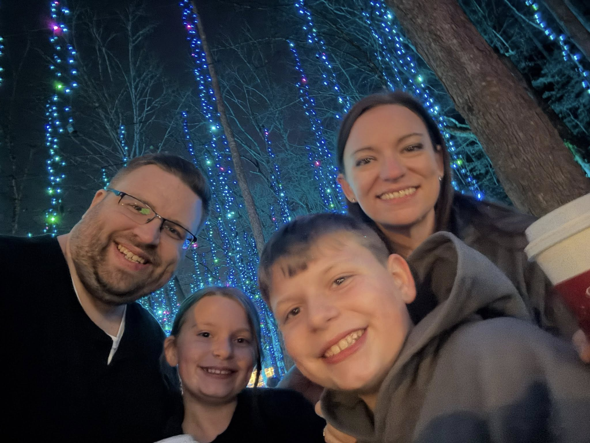
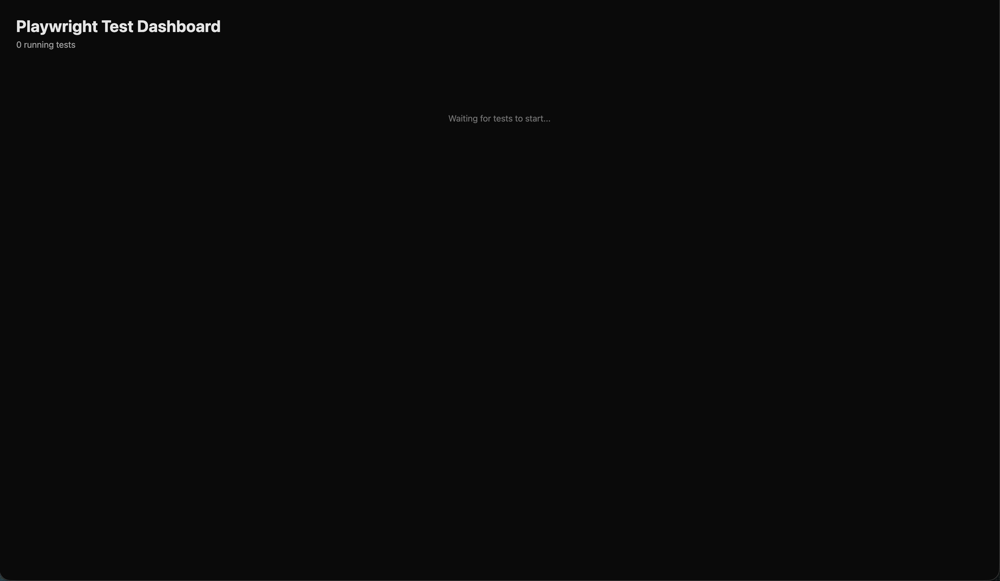

Turbocharge Your Playwright
Features you can ship next Monday
Kevin Roe · QA or the Highway 2026
Who am I?
Kevin Roe · Senior SET, Ramsey Solutions
- Almost 15 years building test automation frameworks
- Focused on automation infrastructure, tooling, and helping teams level up
- Has been described as a "full stack human" (?)
- Teach summer coding camps for middle & high school students
- Not a Playwright employee — mid-migration of hundreds of tests with my team, learning as I go

Who this is for
Already writing Playwright tests and want to level up? Right room.
Not a beginner intro. Not a framework deep-dive.
High-leverage features most teams walk right past.
No AI!
Today's Agenda
- Act 1 — Type Less. Test Better.
- Act 2 — Frontend without a backend
- Act 3 — Backend through the browser
- Act 4 — Debugging and observability
- Closer — What you can build with Playwright
Every feature passes the "could you ship this next Monday?" test.
As I go, ask yourself: which of these solves a problem I didn't know I had?
Hold questions for the end · every slide & link is on the final slide — no need to take notes
Type Less. Test Better.
Reduce the typing and maintenance burden.
Every feature is a one-liner add to an existing suite.
addLocatorHandler()
// Cookie banner blocks every test
await page.getByText('Accept all').click();
await page.getByRole('button', { name: 'Subscribe' })
.click(); // fails if banner reappears
// Cookie banner blocks every test
page.getByText("Accept all").click();
page.getByRole(BUTTON, name("Subscribe"))
.click(); // fails if banner reappears
One new popup = copy-pasting dismiss logic into every test that touches that page.
addLocatorHandler()
await page.addLocatorHandler(
page.getByText('Accept all'),
async (locator) => await locator.click()
);
// runs on every navigation, automatically
page.addLocatorHandler(
page.getByText("Accept all"),
locator -> locator.click()
);
// runs on every navigation, automatically
Locator composition
// Goal: delete the "Widget A" row
await page.locator(
"//table[@id='inventory']/tbody/tr[3]/td[6]/button"
).click();
// "row 3" ...until someone inserts a row
// Goal: delete the "Widget A" row
page.locator(
"//table[@id='inventory']/tbody/tr[3]/td[6]/button"
).click();
// "row 3" ...until someone inserts a row
You wanted the "Widget A" row — but you hard-coded row 3, cell 6. Insert a row or add a column and it points at the wrong thing.
Locator composition
await page.getByRole('row')
.filter({ hasText: 'Widget A' })
.getByRole('button', { name: 'Delete' })
.click();
page.getByRole(ROW)
.filter(new Locator.FilterOptions()
.setHasText("Widget A"))
.getByRole(BUTTON,
new Page.GetByRoleOptions()
.setName("Delete"))
.click();
filter() · and() · or() · nth() · first() · last()
Web-first assertions vs. page.waitforTimeout()
await saveButton.click();
await page.waitForTimeout(2000); // 🤞
expect(await successBanner.isVisible()).toBe(true);
// Jest/Vitest — point-in-time, no retry
saveButton.click();
page.waitForTimeout(2000); // 🤞
assertTrue(successBanner.isVisible());
// JUnit — point-in-time, no retry
Too short = flaky. Too long = slow. Usually both in the same suite.
Web-first assertions vs. page.waitForTimeout()
await saveButton.click();
await expect(successBanner)
.toBeVisible(); // retries until true
// The assertion IS the wait.
saveButton.click();
assertThat(successBanner)
.isVisible(); // retries until true
// The assertion IS the wait.
page.waitForResponse()
await saveButton.click();
await page.waitForTimeout(1500); // hoping API responded
await expect(page.getByText('Saved')).toBeVisible();
saveButton.click();
page.waitForTimeout(1500); // hoping API responded
assertThat(page.getByText("Saved")).isVisible();
You're guessing how long the API takes. The right number today is wrong on a slow CI box tomorrow.
page.waitForResponse()
const resp = await page.waitForResponse(
'**/api/save',
async () => await saveButton.click()
);
// returns the moment the response arrives
expect(resp.status()).toBe(200);
Response resp = page.waitForResponse(
"**/api/save",
() -> saveButton.click()
);
// returns the moment the response arrives
assertThat(resp.status()).isEqualTo(200);
File downloads
const dl = await page.waitForEvent(
'download',
async () => await exportButton.click());
await dl.saveAs('report.csv');
// now assert on the file
Download dl = page.waitForDownload(
() -> exportButton.click());
dl.saveAs(Paths.get("report.csv"));
// now assert on the file
File uploads
await page.locator('input[type=file]')
.setInputFiles('test-data/photo.jpg');
page.locator("input[type=file]")
.setInputFiles(
Paths.get("test-data/photo.jpg"));
Codegen
Most teams don't use Codegen.
It writes the tests you'd want to write — no AI needed!
Frontend Without a Backend
Test UI behavior without a working backend.
Mock it, record it, freeze it, disconnect it.
page.route()
Mock your backend calls
await page.route('**/api/products',
route => route.fulfill({
status: 500,
body: 'Internal Server Error'
}));
// Also: abort(), continue() with overrides
page.route("**/api/products",
route -> route.fulfill(
new Route.FulfillOptions()
.setStatus(500)
.setBody("Internal Server Error")));
// Also: abort(), continue() with overrides
context.setOffline(true)
Test your offline experience
await context.setOffline(true);
await page.reload();
await expect(page.getByText("You're offline"))
.toBeVisible();
await context.setOffline(false);
await expect(page.getByText('Back online'))
.toBeVisible();
context.setOffline(true);
page.reload();
assertThat(page.getByText("You're offline"))
.isVisible();
context.setOffline(false);
assertThat(page.getByText("Back online"))
.isVisible();
routeFromHAR()
Replay tests against a recorded backend
// Record once:
const context = await browser.newContext({
recordHar: { path: 'fixtures/api.har' }
});
// Replay forever:
await context.routeFromHAR('fixtures/api.har',
{ notFound: 'fallback' });
// Record once:
context = browser.newContext(
new Browser.NewContextOptions()
.setRecordHarPath(Paths.get("fixtures/api.har")));
// Replay forever:
context.routeFromHAR(Paths.get("fixtures/api.har"),
new BrowserContext.RouteFromHAROptions()
.setNotFound(RouteFromHARNotFound.FALLBACK));
page.clock
Control time in your tests
// Freeze time at a specific moment
await page.clock.setFixedTime(
new Date('2024-12-31T23:59:55Z'));
await page.goto('https://example.com/countdown');
// Fast-forward 10 seconds
await page.clock.fastForward(10_000);
// Freeze time at a specific moment
page.clock().setFixedTime(
Instant.parse("2024-12-31T23:59:55Z"));
page.navigate("https://example.com/countdown");
// Fast-forward 10 seconds
page.clock().fastForward(10_000);
Environment emulation
Any device, locale, or timezone — no device farm needed
const ctx = await browser.newContext({
...devices['iPhone 13'],
locale: 'ja-JP',
timezoneId: 'Asia/Tokyo',
geolocation: {
latitude: 35.6595, longitude: 139.7004 },
colorScheme: 'dark',
});
await ctx.grantPermissions(['geolocation']);
BrowserContext ctx = browser.newContext(
new Browser.NewContextOptions()
.setViewportSize(390, 844) // iPhone 13
.setDeviceScaleFactor(3)
.setUserAgent("Mozilla/5.0 (iPhone ...)")
.setLocale("ja-JP")
.setTimezoneId("Asia/Tokyo")
.setGeolocation(new Geolocation(35.6595, 139.7004))
.setColorScheme(ColorScheme.DARK));
ctx.grantPermissions(List.of("geolocation"));
Backend Through the Browser
Flip the direction — use Playwright to reach the backend directly.
Real auth, real session, no UI setup chain.
API-seeded fixtures
Skip the UI setup chain
const api = await request.newContext({
baseURL: process.env.BASE_URL
});
await api.post('/api/users', { data: {
email: 'test@example.com',
plan: 'enterprise'
}});
await page.goto('/dashboard');
APIRequestContext api = playwright.request()
.newContext(new APIRequest.NewContextOptions()
.setBaseURL(System.getenv("BASE_URL")));
api.post("/api/users",
RequestOptions.create().setData(Map.of(
"email", "test@example.com",
"plan", "enterprise")));
page.navigate("/dashboard");
context/page.request
Call the API with the browser's session — no scraping
// Log in once, in the browser
const context = await browser.newContext();
const page = await context.newPage();
await page.goto('/login'); // ...sign in...
// Same context → API calls carry its cookies
const resp = await context.request
.get('/api/account/settings');
expect(resp.status()).toBe(200);
// Log in once, in the browser
BrowserContext context = browser.newContext();
Page page = context.newPage();
page.navigate("/login"); // ...sign in...
// Same context → API calls carry its cookies
APIResponse resp = context.request()
.get("/api/account/settings");
assertThat(resp.status()).isEqualTo(200);
Reuse your session
Log in once. Never log in again.
// Global setup — log in, then save:
await context.storageState({ path: 'auth.json' });
// Every test — start already authenticated:
const context = await browser.newContext({
storageState: 'auth.json'
});
// Global setup — log in, then save:
context.storageState(
new BrowserContext.StorageStateOptions()
.setPath(Paths.get("auth.json")));
// Every test — start already authenticated:
BrowserContext context = browser.newContext(
new Browser.NewContextOptions()
.setStorageStatePath(Paths.get("auth.json")));
Postman can't do this. Curl can't do this.
REST Assured can't do this without a separate browser automation tool like Selenium.
Playwright can — because it's the only tool in your test stack with a real browser and a real HTTP client in the same process.
Debugging & Observability
When a test fails — what do you see?
"Playwright remembers everything so you don't have to."
Trace Viewer
await context.tracing.start({
screenshots: true,
snapshots: true,
sources: true
});
// ... run your test ...
await context.tracing.stop({ path: 'trace.zip' });
context.tracing().start(
new Tracing.StartOptions()
.setScreenshots(true)
.setSnapshots(true)
.setSources(true));
// ... run your test ...
context.tracing().stop(new Tracing.StopOptions()
.setPath(Paths.get("trace.zip")));
trace.playwright.dev — no install, send a URL to a colleague.
Trace Viewer — Actions

Trace Viewer — Screenshots

Trace Viewer — Errors

Trace Viewer — Console

Trace Viewer — Network

page.pause() +
Playwright Inspector
// Drop this anywhere in a failing test
await page.pause();
// → Inspector opens, test freezes
# Or, from the command line directly
PWDEBUG=1 npx playwright test my-test.spec.ts
// Drop this anywhere in a failing test
page.pause();
// → Inspector opens, test freezes
# Or, from the command line directly
PWDEBUG=1 mvn test -Dtest=MyFailingTest
Step through actions · Inspect live DOM · Run JS · Pick locators
Playwright Inspector
Step through, inspect the DOM, run JS, pick locators — all against a live paused test.

Visual regression —
TypeScript
Save the baseline
// First run — saves baseline to disk
await page.screenshot({
path: 'snapshots/checkout.png'
});
Assert against it
// Built in to @playwright/test
await expect(page).toHaveScreenshot(
'checkout.png');
// Subsequent: pixel-diff
// On failure: expected/actual/diff triple
toHaveScreenshot() handles baseline management automatically — built in to @playwright/test.Visual regression —
the other bindings
The primitive — same in every binding
// First run — saves baseline to disk
page.screenshot(new Page.ScreenshotOptions()
.setPath(Paths.get(
"snapshots/checkout.png")));
Wrap it yourself — example
// a ~60-line helper around the primitive
assertScreenshot(page, "checkout");
// first run saves · then pixel-diffs
// on failure: expected / actual / diff
Just an example. Full source — Java, Python & .NET — in the repo:
github.com/kroe761/playwright-demos/tree/main/vrt
Observer patterns
// JS console errors
page.on('console', msg => {
if (msg.type() === 'error')
errors.push(msg.text());
});
// Unhandled exceptions
page.on('pageerror', err =>
failures.push(err.message));
// Failed network requests
page.on('requestfailed', req =>
networkFailures.push(
`${req.url()} — ${req.failure()}`));
expect(errors).toHaveLength(0);
// JS console errors
page.onConsoleMessage(msg -> {
if (msg.type().equals("error"))
errors.add(msg.text());
});
// Unhandled exceptions
page.onPageError(err ->
failures.add(err.message()));
// Failed network requests
page.onRequestFailed(req ->
networkFailures.add(
req.url() + " — " + req.failure()));
assertThat(errors).isEmpty();
The trace — beginning

The trace — middle

The trace — end

Everything you've seen today — you can ship on Monday.
But here's one more thing you can do with Playwright.
Playwright CI Test Viewer
Architecture

The test page
Dashboard in action
How it works
// Open a websocket connection
const name = encodeURIComponent(testInfo.title);
const ws = new WebSocket(
`ws://localhost:8080?name=${name}`
);
// Send the screencast to the websocket
await page.screencast.start({
onFrame: (frame) => ws.send(frame.data),
path: 'recording.webm',
quality: 50,
size: { width: 1280, height: 720 },
});
// Open a websocket connection
var url = "ws://localhost:8080?name=" + testName;
var ws = new WsClient(url);
ws.connect();
// Send the screencast to the websocket
page.screencast().start(
new Screencast.StartOptions()
.setOnFrame(f -> ws.send(f.getData()))
.setPath(Paths.get("recording.webm"))
.setQuality(50)
.setSize(new ViewportSize(1280, 720))
);
The repo sample: three processes · ~500 lines total · A few days of work.
See exactly what every browser is doing in CI — live, while it's happening.
Questions?
Also - what's the weirdest thing you've automated?
Playwright Demos Repo
github.com/kroe761/playwright-demos
LinkedIn
linkedin.com/in/kroe761
"Go Forth and Test" Blog
goforthandtest.com
Session Feedback
QA or the Highway